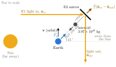
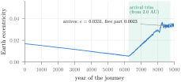
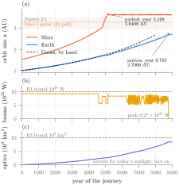
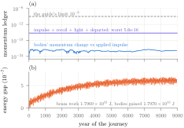
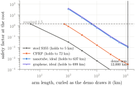
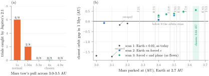
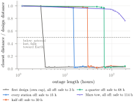
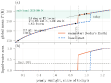
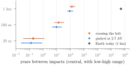
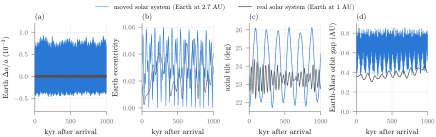

1 Introduction
The brief from Black Ant Robotics \cite{guide} asks for a simulation of a machine that moves Earth to a new orbit, from 1 AU to about 2.7 AU, without harming the planet or life on it. An entry wins only if six conditions hold together (Table \ref{tab:win}): Earth reaches the target within 10,000 years; ten Earth-safety thresholds (taken from the company's reference demo \cite{demo}) hold for the whole run; every structure keeps a safety factor of at least 1.5; all ten official benchmarks pass; every force is booked with its reaction, conserving energy and momentum; and no flag is left unresolved. Teams may declare up to three bounded hypothetical enablers, and flags caused only by them are allowed.
One physical fact shapes every answer: the momentum of the Earth system changes only under an external force. Anything that pushes against Earth itself, such as the brief's reference concept Octo-Earth (eight arms rooted on a ring round the globe), exerts internal forces that cancel (Section 6.1). The external options are throwing mass away, light, or the gravity of another body. Korycansky, Laughlin and Adams \cite{korycansky2001} proposed using the third repeatedly, swinging a $10^{19}$ kg body past Earth about every 6,000 years about a million times; their passes come within $\sim10^4$ km, would probably lose the Moon, and they call the plan "extremely risky". Lu and Love's gravitational tractor \cite{lu2005} uses a hovering spacecraft, held up by its thrusters, to tow an asteroid with its gravity. Stellar engines \cite{shkadov1987,caplan2019} move the Sun, and Earth only follows.
We turn Lu and Love's tractor round: an asteroid tows Earth, and light holds the asteroid. This paper gives the physics of that design: its sizing (Sections 2–3), the enablers and their precedents (Section 4), the full simulation (Section 5), the counterfactuals and stress tests that shaped it (Section 6), and its limits (Section 7). All numbers come from the public repository's runs.
| Winning condition | Result |
|---|---|
| Target within 10,000 yr | year 8,758; $a=2.7006$ AU, $e=0.0331$, tilt $1.29^\circ$ |
| Ten Earth-safety thresholds | all hold at every 100-day check (Table \ref{tab:safety}) |
| Safety factor $\ge 1.5$ | lowest 1.57, sized at the E1 power cap |
| Benchmarks | 10 of 10 official; own checks X1–X9 pass |
| Forces booked; $E$, $p$ conserved | ledger $5.6\times10^{-16}$ (limit $10^{-9}$); work vs energy 0.007% |
| No unresolved flags | 0 unresolved; 6 covered by E1–E3 |
2 The size of the job
For near-circular orbits Earth must gain the orbital energy
$$\Delta E=\frac{GM_\odot M_\oplus}{2}\left(\frac{1}{a_0}-\frac{1}{a_1}\right)\approx1.69\times10^{33}\ \text{J}, \label{eq:energy}$$with $M_\oplus$ including the Moon. A slow spiral changes the circular speed from 29.78 to 18.13 km/s, so the along-orbit pushes must add up to $\Delta v\approx11.66$ km/s. Spread over 8,758 years this is $6.5\times10^{21}$ W into Earth's orbit, about 300 million times humanity's power use, 37,000 times the sunlight Earth intercepts, and $1.7\times10^{-5}$ of the Sun's output. At 2.7 AU Earth gets $1/2.7^2=13.7\%$ of today's sunlight and, left alone, freezes at 150 K (Section 6.7); a year lasts $2.7^{3/2}=4.44$ of today's.
3 Concept and model
3.1 The tow
A $m_a=3.97\times10^{20}$ kg asteroid (radius 336 km at 2,500 kg m$^{-3}$; between Vesta, $2.59\times10^{20}$ kg \cite{russell2012}, and Ceres, $9.38\times10^{20}$ kg) sits $d=637{,}100$ km from Earth, $45^\circ$ between straight ahead along the orbit and straight away from the Sun (Fig. \ref{fig:geom}). Its gravity pulls Earth with
$$\begin{gathered}F_g=\frac{GM_\oplus m_a}{d^2}=3.95\times10^{17}\ \text{N},\\ a_\oplus=\frac{Gm_a}{d^2}=6.53\times10^{-8}\ \text{m s}^{-2},\end{gathered} \label{eq:pull}$$of which $F_g\cos45^\circ=2.79\times10^{17}$ N lies along the orbit. Nothing else touches Earth. The tow's tide on the Earth–Moon pair is 0.12% of the Moon's own; 50-year runs of the Sun, Earth, Moon and asteroid at the start, middle and end of the journey change the Moon's distance by at most 0.05%.

3.2 Holding the asteroid with light
Earth pulls the asteroid back with the same $F_g$. A mirror tied to the asteroid by cables takes a beam arriving along $\hat{\mathbf n}_{in}$ and sends it out along $\hat{\mathbf n}_{out}$, which pushes with
$$\mathbf F=\frac{P}{c}\left(\hat{\mathbf n}_{in}-\hat{\mathbf n}_{out}\right),\qquad P=\frac{|\mathbf F|^2c}{2\,\hat{\mathbf n}_{in}\!\cdot\mathbf F}. \label{eq:light}$$A head-on bounce gives the most push per watt, $2P/c$, and would need $5.9\times10^{25}$ W. Light can only push, so the beam must come from the Sun's side; at the $45^\circ$ spot, light arriving along the anti-Sun line is turned through $90^\circ$ ($|\hat{\mathbf n}_{in}-\hat{\mathbf n}_{out}|=\sqrt2$), which needs $8.4\times10^{25}$ W. Among the placements whose beams stay clear of Earth, this one gives the most pull along the orbit per watt. Where a straight path would pass within 420,000 km of Earth (beyond the Moon's farthest point, 406,700 km), light arrives up to $30^\circ$ off the Sun line. The closest any beam came was 448,909 km.
A hovering body sits at an unstable balance: Earth's pull changes across the spot at $2GM_\oplus/d^3$, so a drift grows with e-folding time
$$\tau=\left(\frac{d^3}{2GM_\oplus}\right)^{1/2}=6.6\ \text{d}\quad(d=637{,}100\ \text{km}). \label{eq:tau}$$Each step the controller asks for the force the spot's motion needs, minus the gravity the asteroid already feels, plus a correction with a 10-day response. Its restoring strength must beat the gradient at least threefold and the step must be under $\tau/3$; both are checked every 100 days. The asteroid never strayed more than 2,715 km (0.4%) from its spot.
3.3 How fast the orbit grows
Gauss's equation for a push $\mathbf f$ per unit mass \cite{murray1999},
$$\frac{da}{dt}=\frac{2a^2}{\mu}\,\mathbf v\cdot\mathbf f\ \ \Rightarrow\ \ t=\frac{\sqrt\mu}{f_t}\left(a_0^{-1/2}-a_1^{-1/2}\right), \label{eq:gauss}$$integrates for a constant along-orbit push $f_t=a_\oplus\cos45^\circ$ on a circular orbit to 8,004 years from 1 to 2.7 AU. The simulated journey takes 8,758 years (Fig. \ref{fig:journey}a): the Earth tow eases off while Mars's tow sprints (Section 6.3), and from 2.0 AU the arrival trim weakens the pull by up to 40% around each lap. Benchmark 8 checks the integrator against the same equation (3,169.7 km against 3,170.1 km).
3.4 Mars first, and the arrival trim
Earth's path crosses Mars's orbit, so a second tow ($1.56\times10^{20}$ kg at 400,000 km, giving Mars the same pull per unit mass) moves Mars to 3.64 AU first, past Jupiter's 2:1 resonance (3.28 AU) and between the strong resonances with Jupiter and with the moved Earth (Section 6.4). From 2.0 AU the Earth tow steers Earth's eccentricity and plane with Gauss's equations: it weakens its pull on one side of each lap (by at most 40%) and rides up to $20^\circ$ off the orbit plane, so Earth arrives on the eccentricity ($\approx0.03$) and plane, near the invariable plane \cite{souami2012}, that Jupiter and Saturn force at 2.7 AU \cite{murray1999,laskar1990}. The free eccentricity left on arrival is 0.0023 and the free tilt $0.018^\circ$. The pull only ever weakens, so the trim costs no power (Fig. \ref{fig:ecc}).

3.5 N-body integration and the ledger
Every body pulls every other: the Sun; Venus to Neptune on their J2000 orbits \cite{standish}; Ceres, Pallas, Vesta and Hygiea from JPL Horizons \cite{horizons}; and both tow asteroids, with masses from \cite{nssdc}. Mercury is left out (its pull on Earth is tiny and its orbit would need far shorter steps).
$$\ddot{\mathbf r}_i=\sum_{j\ne i}\frac{Gm_j(\mathbf r_j-\mathbf r_i)}{|\mathbf r_j-\mathbf r_i|^3}+\frac{\mathbf F_i^{\rm beam}}{m_i}. \label{eq:nbody}$$Each pair force is computed once and applied as exact negatives, and pushes are summed with an error-free two-sum. The journey uses kick–drift–kick leapfrog with 1-day steps; the benchmarks use Yoshida's fourth-order scheme \cite{yoshida1990}; the million-year runs use REBOUND's MERCURIUS with 5-day steps \cite{rein2012,rein2019}, and check X4 compares against IAS15 \cite{rein2015}. Halving the step moves arrival from year 8,758 to 8,730 (0.3%) with the same final orbit; Mars parks in year 5,170 instead of 5,168.
The only external forces are the beams' pushes on the tow asteroids. Their reaction partners are the stations' recoil, the momentum the reflected light carries away, and the momentum of asteroids sent away after arrival. The guide's two checks are
$$\begin{gathered}|\Delta\mathbf p_{\rm bodies}-\mathbf J|\le10^{-9}|\mathbf J|,\\ |\mathbf J+\mathbf J_{\rm station}+\mathbf J_{\rm light}+\mathbf J_{\rm departed}|\le10^{-9}|\mathbf J|,\end{gathered} \label{eq:ledger}$$with $\mathbf J$ the applied impulse, $|\mathbf J|=8.78\times10^{26}$ kg m s$^{-1}$ over the journey.
3.6 Climate and safety models
Global mean temperature follows a zero-dimensional energy balance \cite{budyko1969,sellers1969} on today's 1,361 W m$^{-2}$ \cite{kopp2011},
$$\frac{S}{4}\bigl(1-\alpha(T)\bigr)=\varepsilon\sigma T^4,\qquad T(x)=\bar T+T_2P_2(x), \label{eq:ebm}$$with an albedo rising from 0.30 to 0.62 as the surface freezes between 280 and 250 K, and an effective emissivity $\varepsilon$ that gives today's Earth 288 K (the greenhouse effect is held as it is). A Legendre latitude profile ($x=\sin$ latitude) \cite{north1975} gives the liquid-water share, with $T_2$ set so 82% of the surface is above freezing today. Without help the model gives 150 K at 2.7 AU, as the company's demo does. The other thresholds come from: the Jeans parameter $\lambda=GM_\oplus m/(kT_{\rm exo}r)$ for N$_2$ with $T_{\rm exo}\propto S^{1/2}$ \cite{chamberlain1987}; the magnetopause standoff, which scales as $r^{1/3}$ as the solar wind thins \cite{chapman1931}; the Moon's distance over Earth's Hill radius, which must stay under 0.49 for prograde moons \cite{domingos2006}; the tow's tidal torque on Earth's spin; and the absorbed flux, kept under the 282 W m$^{-2}$ runaway-greenhouse limit \cite{goldblatt2013}.
3.7 Structures
Cables and anchors are sized for the largest push a beam can ever give, $2P_{\max}/c$ at its tow's power cap, so recovery after an outage is covered. The mirror radiates its absorbed share $\alpha$ from both faces:
$$T_m=\left(\frac{\alpha P}{2\varepsilon\sigma\pi R_m^2}\right)^{1/4}=1{,}466\ \text{K},\qquad {\rm SF}=\frac{\sigma_{E2}A_c}{2P_{\max}/c}=1.57, \label{eq:struct}$$for $\alpha=10^{-7}$, $P=10^{26}$ W, $\varepsilon=0.9$, $R_m=2{,}600$ km, cable section $A_c=10.5$ km$^2$ and $\sigma_{E2}=100$ GPa (Table \ref{tab:struct}).
4 Hypothetical enablers
The guide (section 7) lets a team declare up to three hypothetical enablers, each of a listed kind and bounded by a stated number. Ours (Table \ref{tab:enablers}) were declared at the mid-point check-in and frozen. Each is a hard limit in the configuration, checked every 100 days, and every flag that relies on one names it: six during the journey, two in the million years after. None creates momentum or energy: E1's recoil and reflected light are booked (Eq. \ref{eq:ledger}), its waste heat is radiated, and we do not claim the energy bonus.
E1, focused light up to $10^{26}$ W. This is the design's largest assumption: 26% of the Sun's luminosity, $3.828\times10^{26}$ W \cite{prsa2016}. Its natural source is a partial swarm of collectors focusing sunlight, the same kind of collector Caplan's stellar engine assumes \cite{caplan2019}. The physics has flown. IKAROS measured 1.12 mN of sunlight pressure on its 14 m sail \cite{ikaros}, and LightSail 2 raised its orbit on sunlight alone \cite{lightsail2}. Breakthrough Starshot plans 100 GW laser arrays for gram-scale sails \cite{starshot}, and DE-STAR proposes sunlight-powered phased arrays that push or vaporise asteroids \cite{lubin2013,lubin2014}. E1 is $10^{15}$ times Starshot's power: the physics is proven and the scale is the enabler. E1 is built as many independent stations, so no single fault takes out more than a quarter of the power and a fault is answered within 12 hours.
E2, super-mirror material. It has 100 GPa strength, absorbs $10^{-7}$ of the light, weighs 2,000 kg m$^{-3}$ and works up to 1,500 K. Its strength lies inside the guide's 50–130 GPa range for ideal nanotube or graphene, between the strongest single nanotube measured (63 GPa \cite{yu2000}) and monolayer graphene (130 GPa \cite{lee2008}). The best dielectric coatings, those of the LIGO test masses, absorb under $10^{-6}$ \cite{pinard2017}; E2 asks for a further factor of ten.
E3, planet-scale manufacturing. It places the two tow asteroids (at most $4\times10^{20}$ kg each, asteroids of Vesta's class) and builds the tow mirrors and up to $10^9$ km$^2$ of sunlight optics. Its precedent is Angel's L1 sunshade \cite{angel2006}, which we use the other way round (Section 6.7). At 100 g m$^{-2}$ the optics weigh $10^{14}$ kg, $2.5\times10^{-7}$ of the tow asteroid.
config.yaml, the most the run used, the flags it covers, and its physical basis.| Enabler | Allowed kind | Bound | Most used | Flags covered | Physical basis and precedent |
|---|---|---|---|---|---|
| E1 focused light | power source of stated wattage, waste heat radiated | $10^{26}$ W in total, at every moment | $9.27\times10^{25}$ W (93%) | beam power above humanity's; Vesta's passes (0.018 AU); belt impact rates | radiation pressure flown \cite{ikaros,lightsail2}; laser sails \cite{starshot}; directed-energy defence \cite{lubin2013,lubin2014}; 26% of $L_\odot$ \cite{prsa2016} |
| E2 super-mirror | ideal nanotube or graphene, 50–130 GPa | 100 GPa; absorbs $10^{-7}$; 2,000 kg m$^{-3}$; 1,500 K | SF 1.57; mirror 1,466 K at the cap | tow mirrors and cables | 63 GPa nanotube \cite{yu2000}; 130 GPa graphene \cite{lee2008}; coatings under $10^{-6}$ absorption \cite{pinard2017} |
| E3 manufacturing | asteroid of stated mass; built at the start; raw material delivered | asteroids $\le4\times10^{20}$ kg each; optics $\le10^9$ km$^2$ | $5.53\times10^{20}$ kg in two asteroids; $8.5\times10^8$ km$^2$ face on | asteroids and optics in place; tilt re-aim after arrival | Vesta-class masses \cite{russell2012,nssdc}; L1 optics \cite{angel2006} |
5 Results of the journey
5.1 Trajectory and power
Mars parks at 3.6408 AU in year 5,168; Earth arrives at 2.7006 AU in year 8,758, with eccentricity 0.0331, a $1.294^\circ$ tilt to today's ecliptic and 17.55 km s$^{-1}$ (Fig. \ref{fig:journey}). The planets come closest at the very start, 0.373 AU at an ordinary Mars opposition, against a 0.05 AU limit. Both beams together peaked at $9.27\times10^{25}$ W, under E1's bound, with 7.5 days of the Earth tow at its power cap. Two hundred years after arrival Earth sits at 2.6989 AU, eccentricity 0.034. The largest asteroids come closest at Vesta, 0.0183 AU (limit 0.02), on two passes; E1 nudges each 50 years ahead with 0.06 hours of a $10^{25}$ W beam.

5.2 Conservation
The bodies' momentum change matches the applied impulse to $5.5\times10^{-22}$ of it, and the impulse plus its partners closes to $5.6\times10^{-16}$ (Fig. \ref{fig:cons}; limit $10^{-9}$). The beams did $1.7969\times10^{33}$ J of work and the bodies gained $1.7970\times10^{33}$ J, counting what left with the asteroids: a 0.007% match. The integrator's energy gap stays bounded at $\le6.9\times10^{-7}$ of the total, the usual leapfrog oscillation.

5.3 Earth safety and structures
All ten thresholds hold at every 100-day check (Table \ref{tab:safety}). The Moon and the magnetic shield grow safer as Earth moves out: the Moon's share of the Hill radius falls from 0.256 to 0.095, and the magnetopause widens from 10.0 to 13.9 Earth radii. Every structure keeps a safety factor of at least 1.57 (Table \ref{tab:struct}).
| Threshold | Worst | Limit |
|---|---|---|
| Global mean temperature | 287.8–288.8 K | 263–308 K |
| Surface with liquid water | $\ge$ 82% | $\ge$ 30% |
| Absorbed sunlight | $\le$ 240.9 W m$^{-2}$ | $<$ 282 \cite{goldblatt2013} |
| Surface pressure | 101.3 kPa | $\ge$ 50 kPa |
| N$_2$ Jeans $\lambda$ | $\ge$ 194 | $>$ 30 |
| Magnetopause | $\ge$ 10.0 $R_\oplus$ | $\ge$ 3 $R_\oplus$ |
| Change in day length | $<10^{-6}$ s | $\le$ 1 s |
| Moon / Hill radius | $\le$ 0.256 | $<$ 0.49 \cite{domingos2006} |
| Thrust / Earth's pull on Moon | $\le$ 0.0020 | $<$ 0.01 |
| Check | Earth | Mars | Limit |
|---|---|---|---|
| Cable SF (E2, 100 GPa) | 1.57 | 1.57 | $\ge$ 1.5 |
| Anchor SF (rock, 0.1 GPa) | 1.57 | 1.57 | $\ge$ 1.5 |
| Mirror temperature | 1,466 K | 1,463 K | $\le$ 1,500 K |
| Asteroid body SF (tide) | 120 | 152 | $\ge$ 1.5 |
5.4 Validation
All ten official benchmarks pass (Table \ref{tab:bench}), and they still pass when their inputs are changed (benchmark 4 holds from $e=0$ to 0.9). Our own checks X1–X9 add Kepler's third law, energy over 1,000 years, the ledger with a push on, agreement with IAS15, the asteroid's hold, Octo-Earth's zero net force and the axial tilt.
| # | Benchmark | Measured | Expected |
|---|---|---|---|
| 1 | Wire, $IL\times B$, 1,000 parts | (0,0,10) N | (0,0,10) N |
| 2 | Closed loop, uniform $B$ | $4.3\times10^{-16}ILB$ | 0 ($10^{-9}$) |
| 3 | Biot–Savart, 1 m | $2.00000\times10^{-4}$ T | $\mu_0I/2\pi r$ |
| 4 | Kepler, $e=0.3$, 10 orbits | $1.8\times10^{-8}a$; $E$ $1.1\times10^{-10}$ | $10^{-6}a$; $10^{-9}$ |
| 5 | Sun–Neptune, 5 yr | $E$ $8.9\times10^{-11}$ | $10^{-9}$ |
| 6 | Earth–Moon year | 365.260 d | 365.256 (0.1 d) |
| 7 | Hohmann to Mars | 2.946, 2.650 km/s; 258.9 d | 2.94, 2.65; 259 d |
| 8 | Orbit growth, Gauss | 3,169.7 km | 3,170.1 km (1%) |
| 9 | Cantilever, own weight | within $10^{-9}$ | $qL^2/2$, $qL^4/8EI$ |
| 10 | Equilibrium temperature | 254.0 K | 254 K (2 K) |
6 Counterfactuals, hypothetical situations and stress tests
The design is the result of tests that failed. Table \ref{tab:what} lists them; the most important follow.
sim/scenarios/; results in results/).| Situation | Finding | Consequence for the design |
|---|---|---|
| Octo-Earth, as the brief's demo draws it | net force $3.4\times10^{-13}$ of each $1.94\times10^6$ N; a 12,000 km arm breaks curled past 5 km (steel), 637 km (nanotube) | no arms on Earth; tow from outside with gravity |
No Mars tow (--no-mars-tow) | Earth passes Mars at about 33,000 km | tow Mars out first, to 3.64 AU |
| Mars across Jupiter's 2:1 at normal pull | caught in 6 of 8 starts (Fig. \ref{fig:mars}a) | 4× sprint across 3.0–3.5 AU: 0 of 8 |
| Mars parked at 3.0–3.2 AU | escapes, or its orbit crosses Earth's within 1 Myr (Fig. \ref{fig:mars}b) | park at 3.64 AU, between resonances |
| Mars's asteroid at 100,000 km | gradient e-folds in 1.8 d, faster than the controller and the step | 400,000 km (14 d); sprint to 200,000 km (5 d) |
| Beam outage, first design | 3 hours dark lost the asteroid, which fell through the Moon's orbit | shared E1 budget; many stations (Fig. \ref{fig:outage}) |
| Arrival without the trim | Earth's $e$ drifts to 0.09; tilt swings $15^\circ$–$28^\circ$ | Gauss trim from 2.0 AU: $e\le0.060$, tilt $21.7^\circ$–$26.1^\circ$ |
| Swap Earth and Mars (Plan S) | orbits must cross; 48 of 48 crossings pass inside 0.05 AU, 2 inside the Moon's distance | not adopted; staged handover closest 0.026 AU |
| No sunlight optics | 150 K, no liquid water at 2.7 AU | E3 optics, up to $8.5\times10^8$ km$^2$ |
| Optics placed for real | simple ring needs $1.2\times10^9$ km$^2$ (20% over E3); L1 refractor gives 97% at E3's bound | L1 ring (286 K); fallback: sunlight-held ring at $120^\circ$ |
| Small rocks at 2.7 AU | 20 m: about 8 a year; 100 m: one per 9 years; 1 km: one per 87 years | infrared survey; E1 pushes each (2% of its spare) |
| Tow mirror seen at night | 1,466 K disc the Moon's size; 0.24 lux at full power | open risk: scatter must stay $<3.4\times10^{-11}$ |
| Half-size time step | arrival year 8,730 vs 8,758; same final orbit | results converged |
6.1 The reference concept: Octo-Earth

We audited the brief's concept with the same physics, at the arm the company's demo draws \cite{demo}: eight arms on a ring round the equator, each 12,000 km long in 24 jointed segments (a 200 km tube with 2 km walls, carrying 1 MA), curling $72^\circ$ round the globe to a claw 4,600 km up. Earth's field comes from its core, modelled as a loop with Earth's dipole moment \cite{alken2021}. Computed separately with Biot–Savart and $I\,d\mathbf l\times\mathbf B$, the core's push on the arms ($1.94\times10^6$ N) and the arms' push on the core cancel to $3.4\times10^{-13}$ (check X8): whatever their shape, the arms push only on Earth itself. In the demo's uniform 0.5 nT outside field, closed circuits feel $2\times10^{-12}$ N. Arms without a return path would carry no steady current; even if they could, Earth's own field would give at most $3\times10^9$ N, a trip of $10^{12}$ years. Structurally, a curled arm is a beam held at its root: at 12,000 km the root carries a safety factor of 0.012 even in ideal nanotube (Fig. \ref{fig:octo}). Standing straight up, a column buckles under its own weight \cite{greenhill1881} past 471 km (steel) or 1,444 km (nanotube).
6.2 Without Mars's tow
Run with --no-mars-tow, Earth's widening orbit meets Mars's and the two pass about 33,000 km apart, inside the Moon's distance. Mars must move, and it must move first.
6.3 Crossing Jupiter's 2:1 resonance
To reach 3.64 AU, Mars must cross 3.28 AU, where its period is half Jupiter's. A resonance crossed slowly can capture a planet and pump up its eccentricity. Started at 2.95 AU from eight points on its orbit and pulled across at the normal strength, Mars was caught 6 times in 8. At 1.56× it was caught 2 times, and at 3.3×, 4× and 4.9× never (Fig. \ref{fig:mars}a). So between 3.0 and 3.5 AU Mars's asteroid moves in to 200,000 km and pulls four times as hard ($3.55\times10^{25}$ W). Meanwhile Earth's asteroid drifts out to 850,000 km, keeping E1's total under its bound with a third of the Earth tow's power spare. Mars crosses in decades rather than centuries. Its eccentricity is not trimmed: any weakening of its pull near the resonance raises the chance of capture.

6.4 Where Mars parks
Once Earth sits at 2.7 AU, its resonances join Jupiter's. Between 3.0 and 3.2 AU every arrangement failed within a million years: Mars escaped (3.1 and 3.15 AU), was thrown out to 20 AU (3.0 AU) or crossed Earth's orbit (3.05 and 3.2 AU). Placed directly at 3.4 AU it kept a gap of 0.08–0.29 AU, but in an earlier full journey an untrimmed Mars parked there, beside Earth's 7:5 resonance (3.379 AU), drifted until the orbits crossed. 3.64 AU lies between Jupiter's 7:4 (3.583) and 5:3 (3.701) and Earth's 3:2 (3.538) and 8:5 (3.694), and leaves the widest gap, 0.55 AU, between the orbits (Fig. \ref{fig:mars}b).
6.5 Beam outages
The first design gave the Earth tow its own $8.5\times10^{25}$ W cap with 1.5% spare: a 3-hour blackout lost the asteroid, which then fell through the Moon's orbit. With the shared E1 budget, structures sized for full power and independent stations, full runs with the beams cut for longer and longer show that the Earth tow keeps its asteroid through 15 hours with every station off, 30 hours with half off and 68 hours with a quarter off (Fig. \ref{fig:outage}). The Mars tow survives 4.75 days with every station off, but only 10.5 hours during its sprint, when it sits closer to Mars. E1's fault rule (no fault over a quarter of the power, answered within 12 hours) stays inside every one of these margins.

6.6 Swapping Earth and Mars
Moving Mars inward to 1 AU while Earth goes out (Plan S, sim/scenarios/swap.py) costs Mars only 5.66 km s$^{-1}$ instead of 8.52 and avoids Jupiter's 2:1 resonance. But the orbits must cross, near 1.22 AU around year 1,940. Over 48 crossing runs (Mars eccentric or round, normal pull or 4× sprint, 12 starts each), every run passed inside the 0.05 AU limit, 2 to 99 times. The closest passes were 0.0018–0.0447 AU, 10 runs came within a million kilometres and 2 inside the Moon's distance. The swapped end state is stable for a million years (orbit gap 1.39–1.46 AU against our 0.55), and a staged handover, the planets $180^\circ$ apart as Janus and Epimetheus swap, completes in 130–240 years without coming within 0.37 AU; but restarting the tows re-swaps them at near-collision distances unless Mars sprints (closest 0.026 AU). Plan S stays a studied alternative.
6.7 Sunlight optics and the climate cliff
The energy balance has two stable branches (Fig. \ref{fig:climate}). A warm Earth stays warm down to 89.3% of today's sunlight and then falls to the frozen branch, from which it recovers only above about 105%. The journey's optics are counted face on, holding sunlight at 0.995–1.010 of today's. Placed for real, the simple choice, a ring orbiting 200,000 km out with its spots aimed at daylit ground, needs $1.2\times10^9$ km$^2$, 20% over E3. Capped at E3 it gives 85% of today's sunlight, and the climate freezes (238 K). Our design is a ring of refracting film near the Sun–Earth L1 point: Angel's sunshade \cite{angel2006} turned round, bending extra sunlight onto Earth from the Sun's own direction, so noon and night stay natural. Sunlight pushes 100 g m$^{-2}$ film 0.86% past L1 (4.08 million km). Its $10^{-8}$ m s$^{-2}$ station-keeping is a tenth of what tilting the film supplies, against a 103-day instability. 82% of the bent light lands on Earth, and at E3's bound the ring gives 97.3% of today's sunlight and 286.0 K at 95% transmission. At 90% transmission it gives 281.7 K, and at 85% the climate freezes. If E3 is read as mirrors only, the fallback is a ring held $120^\circ$ from the Sun by sunlight ($9.8\times10^8$ km$^2$ of 1 µm film, 711,000 km out), which brings the extra light at dawn and dusk.

6.8 Small bodies at 2.7 AU
2.7 AU lies inside the main belt. Over 2,958 years we tracked 1,000 real belt orbits \cite{sbdb} and scaled their 1,325 close passes to the belt's 1.2 million asteroids over 1 km \cite{tedesco2002}. Without help, Earth would meet a 1 km asteroid once every 127 years while crossing the belt and once every 87 years once parked, against once per 500,000 years today \cite{catalina}. With JWST's size distribution of decametre asteroids \cite{burdanov2025}, the parked Earth would meet a rock of 20 m or more about 8 times a year (1 to 40 across the slope errors; 0.13 Mt each), and one of 100 m about once per 9 years (17 Mt). A fleet of infrared survey telescopes of the NEO Surveyor class \cite{mainzer2023,kim2024}, rated with the thermal models of \cite{harris1998,lebofsky1986}, sees a dark 20 m rock 10 to 15 days out. E1 pushes it aside with $1.6\times10^{23}$ W, 2% of its spare power, as DE-STAR proposes \cite{lubin2013}. A 1 km asteroid found 10 years ahead needs a 5 cm s$^{-1}$ nudge: about $10^{14}$ W for a day. Dust \cite{grun1985} holes 570 km$^2$ of optics a year for E3 to replace. Breaking up the Moon would take 20 times the belt's mass \cite{pitjeva2018,benz1999,stewart2009} (Fig. \ref{fig:impacts}).

6.9 The tow mirror at night
The tow mirror faces Earth. At the power cap it glows at 1,466 K as a red disc $0.47^\circ$ across, $135^\circ$ from the Sun, giving 0.24 lux, about a full Moon. Beam light it scatters falls on Earth too, and keeping that under a full Moon needs a scatter fraction below $3.4\times10^{-11}$. No enabler bounds it (E2 bounds absorption, and E1 sets no wavelength), so it stays an open risk.

6.10 A million years after arrival
With the tows sent away, we ran the moved solar system for $10^6$ years beside the real one (Fig. \ref{fig:long}). Earth stays at 2.698–2.702 AU with eccentricity up to 0.060 (the real Earth's: 0.051). Mars stays at 3.614–3.655 AU, never closer than 0.362 AU to Earth's orbit, and no body is thrown out. Earth's axial tilt swings over $21.7^\circ$–$26.1^\circ$ against today's $22.2^\circ$–$24.4^\circ$, because at 2.7 AU its spin precession (about $35^{\prime\prime}$ a year) runs close to the Jupiter–Saturn plane mode ($26^{\prime\prime}$ a year) \cite{laskar1990}. Keeping today's seasons would mean re-aiming 1.4% of Earth's sunlight, twice the real Earth's own 0.66%. Big asteroids pass within 0.01 AU 45 times, and each is nudged 50 years ahead with at most 0.62 hours of a $10^{25}$ W beam. Two chaos copies \cite{laskar1989}, with Earth moved by 1 km, agree; in one of them Ceres leaves the solar system in year 262,014, harmlessly.
7 Discussion
Why so much power? Light carries momentum $P/c$, so holding a $3.95\times10^{17}$ N load needs $\sim10^{26}$ W even though Earth's orbit gains only $6.5\times10^{21}$ W on average. The work the beams do is the energy the light loses to Doppler shift on the moving mirror. Over the journey that is $7.7\times10^{-5}$ of the light's energy, of order $v_\oplus/c=9.9\times10^{-5}$. Any light-held tractor shares this cost; a mass driver or a rocket on the asteroid would cost far less power but would need reaction mass, which E3 would have to supply. The brief's alternatives, Octo-Earth's arms and a magnetic push against Earth's own field, cannot work at any power.
Limits of the model. (i) Hardware: the beam stations, optics and the placing of the asteroids are what E1–E3 declare; the model books their forces, recoil and bounds, not their engineering. (ii) The climate is zero-dimensional, with no weather, oceans, carbon cycle or biology. Seasons at 2.7 AU last about 13 months, and the model gives yearly means only. (iii) The run counts the optics face on; the L1 placement is a calculation on the run's results, and below 89% of today's sunlight the model's Earth freezes, so the film must pass at least about 88% of the light. The 1.4% tilt re-aim must come out of E3's area. (iv) The Moon's orbit and Earth's spin axis have their own runs. The small-body rates are calculations on the run's belt passes. (v) The ten safety thresholds are the company demo's; if the rulebook differs, its numbers go into the configuration and the run is repeated. (vi) Beyond a few million years the inner solar system is chaotic \cite{laskar1989}, and our runs cannot speak to it.
Compared with flybys. Where Korycansky et al. \cite{korycansky2001} need about $10^6$ close passes and probably lose the Moon, we need one held body, never closer than 637,100 km; the price is E1. Next we would add the Moon to the long run, a seasonal climate and a sweep of tow mass and distance.
8 Conclusions
A gravity tractor held by light moves Earth to 2.7006 AU in 8,758 years in a full N-body simulation that meets all six winning conditions: Earth safe throughout, structures at a safety factor of 1.57 or more, all benchmarks passing, forces booked to $5.6\times10^{-16}$, and only enabler-covered flags. The physics is ordinary (Newtonian gravity, radiation pressure, Gauss's equations, a planetary energy balance); the scale rests on three bounded enablers, chiefly 26% of the Sun's luminosity as focused light. Most of what makes the journey safe came from failed tests: towing Mars first and sprinting it across Jupiter's 2:1 resonance, parking it between resonances, sharing and distributing the beam power, and trimming Earth onto its forced orbit before arrival.
Data, code and contributions
Every number here comes from results/ and config.yaml; docs/physics/figures.py draws the figures from them. The journey runs with uv run python -m sim.scenarios.tow (about 1.5 hours). Who built what is in docs/contributions.md. Code and documents were drafted with the help of an AI coding assistant (Claude Code); all results come from the repository's own runs.